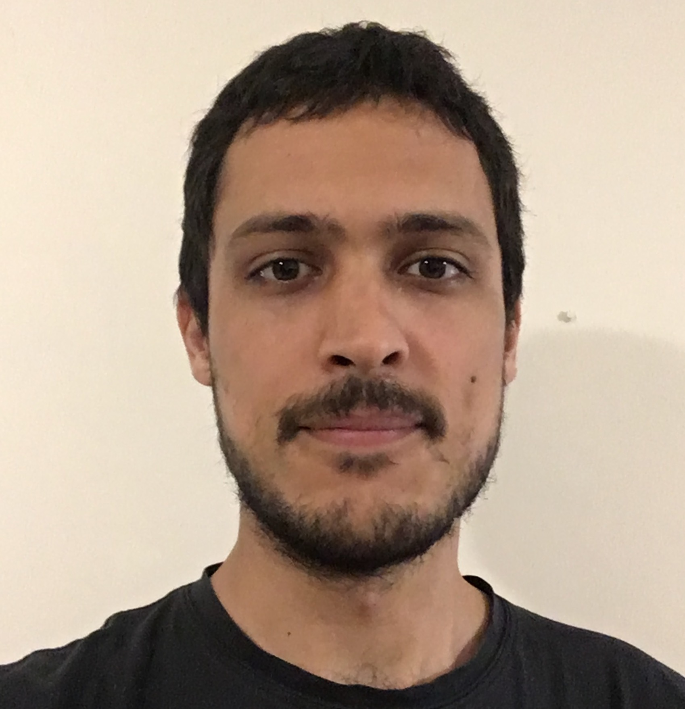

Cristian Sottile
ra tod abu
tod cd
ta elittosc
Current Position
PhD Student (CONICET Doctoral Fellow) @ ICC (UBA/CONICET)
I am a member of the LoReL (Logic and Rewriting for Programming Languages) team. I work in the elaboration of new techniques for proving termination of programs (strong normalization) in different variants of typed lambda calculus. Previously, I worked in the design of programming languages equating isomorphic types.
Director: Alejandro Díaz-Caro. Co-director: Pablo E. "Fidel" Martínez López.
Head Teaching Assistant @ UNQ (CPI)
Taught courses:
Foundations of Programming Languages,
Logic,
Data Structures,
Functional Programming,
Introduction to Programming.
Education
Publications
- Strong normalization through idempotent intersection types: a new syntactical approach [Pre–proceedings|arXiv]
P. Barenbaum, S. Ronchi Della Rocca, C. Sottile
MFPS '25. 2025
- Two decreasing measures for Simply Typed Lambda-Terms [LIPIcs|arXiv]
- Polymorphic System I [ACM|arXiv]
C. Sottile, A. Díaz-Caro, P. E. Martínez López.
IFL '20. 2021
Students
Presentations
-
Una medida decreciente directa para tipos intersección
[Slides]
-
Reducibility candidates modulo isomorphisms
[Slides]
-
Termination guarantees in polymorphic lambda calculi
[Slides|Poster]
-
Strong normalization and decreasing measures: syntactic proofs of termination in typed lambda calculus
[Slides]
54 JAIIO.
Universidad de Buenos Aires. August 4, 2025.
-
Strong normalization through idempotent intersection types: a new syntactical approach
[Slides]
-
Strong normalization through idempotent intersection types: a new syntactical approach
[YouTube|Slides]
-
Strong normalization and decreasing measures: syntactic proofs of termination in typed lambda calculus
[YouTube|Slides]
-
A syntactic approach to Strong Normalization through decreasing measures
[Slides]
-
Measuring programs to prove termination
[Slides]
-
Two decreasing measures for STLC
[Slides]
-
Two decreasing measures for STLC
[Slides]
-
Measuring programs to prove they terminate
[Slides]
-
Strong normalisation in a System F modulo isomorphisms
Deducteam Seminar.
Deducteam, Laboratoire Méthodes Formelles, Université Paris-Saclay. October 6, 2022.
-
Quotienting programs by final utility
[Slides]
- Adding polymorphism to a logic identifying isomorphic propositions (Masters thesis abstract)[YouTube]
- Equating polymorphic programs with the same final utility [YouTube]
- Towards a practical implementation of programming languages equating isomorphic types [YouTube]
- Polymorphic System I [YouTube]
- Communication talk [YouTube]